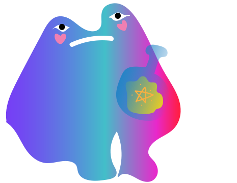
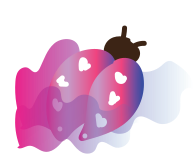
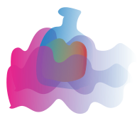
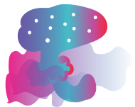
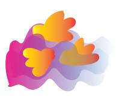

ЛАВКА С МАГИЧЕСКИМИ ЗЕЛЬЯМИ
СНАДОБ'
КУПИТЬ ЗЕЛЬЕ

Жук "ADC"
Жук-навозник аппетитное лакомство для лягушки. Не обладает никакими магическими свойствами.

Зелье "КР"
Зелье из кореандора с добавлением лягушачих лапок. С помощью него, можно превратить человека в лягушку.
Зелье "ОЛ"
Зелье с анчоуссами с добавлением молока. С помощью него можно превратиться в корову.

Гриб "ЛО"
Гриб аппетитное лакомство для лосей. Для лягушек оно опасно. Вызывает галюцинацию.
Зелье "ПК"
Зелье с персиком. Облегчает приминение другого зелья, и помогает превратиться обратно в человека.

Жуки "ПН"
Жуков нельзя кушать, они слишком милые.